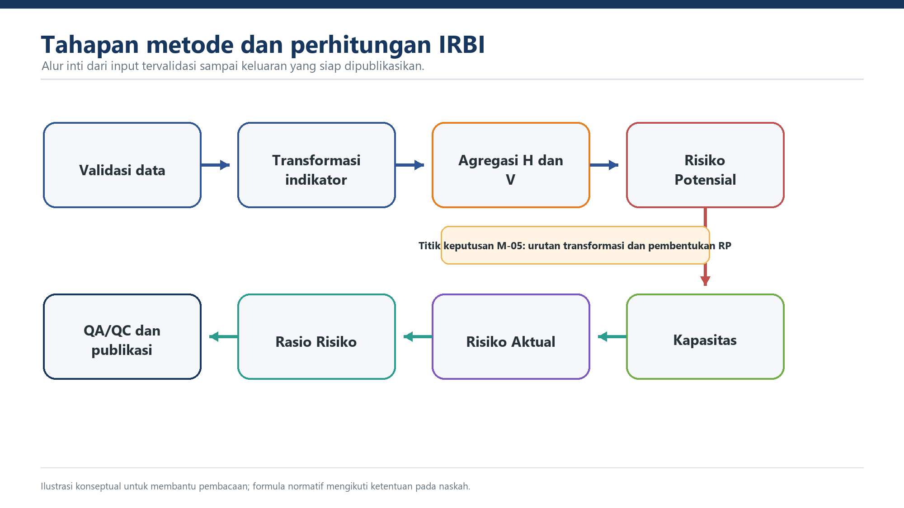

Bab IV. Metode Perhitungan IRBI
Draf ilustratif v0.8 — substansi diselaraskan dengan naskah 8 bab
Status: draf kerja, belum normatif · Acuan: laporan 2026, workbook, dan register isu · Versi: 0.8
Tujuan Bab
Menetapkan urutan perhitungan yang dapat direproduksi mulai dari transformasi indikator sampai pembentukan RP, C, RA, dan RR.
4.1 Alur Perhitungan
Validasi data → transformasi indikator → agregasi bahaya dan kerentanan → Risiko Potensial → Kapasitas → Risiko Aktual → Rasio Risiko → QA/QC → publikasi.

4.2 Transformasi dan Standardisasi Indeks
4.2.1 Tujuan Transformasi
Transformasi menyetarakan indikator yang memiliki satuan berbeda ke skala 0-1 dan mempertahankan perubahan secara kontinu. Transformasi tidak memperbaiki kesalahan satuan atau data sumber; validasi input selalu dilakukan lebih dahulu.
4.2.2 Fungsi Fuzzy Sigmoid
I(x) = 1 / [1 + (x/m)^(-s)]
x adalah nilai indikator mentah, m adalah midpoint, dan s adalah spread. Untuk nilai positif dan parameter yang sah, hasil berada pada rentang 0-1. Perlakuan x=0, nilai negatif, data kosong, dan parameter tidak tersedia ditetapkan secara eksplisit pada prosedur validasi.
4.2.3 Kalibrasi Parameter
Parameter diturunkan dari batas bawah x_L, batas atas x_U, dan target indeks 0,333 serta 0,666. Simbol perantara pada Persamaan 2-3 dalam laporan belum konsisten dan harus diselesaikan melalui M-02. Sampai keputusan tersebut ditetapkan, parameter hasil kalibrasi digunakan sebagai tabel terkendali dan tidak dihitung ulang oleh pengguna.
| Komponen | Jenis bahaya | x_L | x_U | s | m |
|---|---|---|---|---|---|
| Penduduk terpapar | Semua kecuali karhutla | 500 | 1.000 | 1,998 | 707,903 |
| Kerugian fisik | Semua kecuali kekeringan dan karhutla | 1,4 | 2,1 | 3,415 | 1,716 |
| Kerugian ekonomi | Seluruh bahaya | 0,15 | 0,325 | 1,791 | 0,221 |
| Kerusakan lingkungan | Banjir, banjir bandang, GEA | 70 | 205 | 1,289 | 120,001 |
| Kerusakan lingkungan | Karhutla, kekeringan, likuefaksi, LGA, longsor | 65 | 185 | 1,324 | 109,845 |
| Kerusakan lingkungan | Tsunami | 55 | 185 | 1,142 | 101,070 |
| Multi | 11 bahaya dalam workbook | 3,663 | 7,326 | 1,998 | 5,186 |
Angka pada tabel disimpan dengan presisi penuh dalam perangkat hitung. Pembulatan hanya dilakukan untuk penyajian.
4.2.4 Contoh Transformasi
Untuk penduduk terpapar banjir Kabupaten Aceh Selatan sebesar 136.976,831 jiwa, dengan m=707,903 dan s=1,998, workbook menghasilkan indeks 0,999973.
Contoh tersebut juga memperlihatkan pentingnya pemeriksaan satuan. Nilai kerugian fisik dan ekonomi V2025 menghasilkan indeks yang sangat dekat dengan 1. Kondisi ini dicatat sebagai sinyal pemeriksaan, bukan langsung dianggap sebagai nilai risiko yang benar.
4.2.5 Aturan Domain dan Galat
Nilai negatif, IKD di luar 0-1, parameter kosong, atau satuan yang tidak terkonfirmasi dihentikan sebelum perhitungan. Nol sah dipertahankan sebagai nol. Tidak berlaku dan tidak tersedia menggunakan status berbeda. Pesan galat disimpan dan dilaporkan; galat tidak diganti dengan teks kosong tanpa jejak. ## 4.3 Indeks Multi-Bahaya
4.3.1 Bahaya Tunggal
Setiap jenis bahaya dihitung dan disimpan terpisah pada skala 0-1. Nilai nol, tidak berlaku, dan tidak tersedia dibedakan melalui status data. Indeks bahaya tunggal harus dapat ditelusuri ke sumber dan versi KRB yang digunakan.
4.3.2 Daftar Bahaya
Implementasi workbook menggunakan 11 jenis bahaya. Tabel bobot dalam laporan menggabungkan tanah longsor dan likuefaksi sehingga menghasilkan 10 kelompok. Sebelum penetapan nasional, M-04 harus menghasilkan daftar final dan pemetaan setiap jenis bahaya ke parameter serta bobotnya.
4.3.3 Agregasi
Laporan menggunakan I_multi = sum(I_i). Workbook menjumlahkan sebelas kolom bahaya pada setiap wilayah. Dengan daftar 11 bahaya, nilai agregat mentah berada pada rentang teoritis 0-11.
Untuk Kabupaten Aceh Selatan, jumlah indeks bahaya tunggal dalam workbook adalah 8,998. Letusan gunungapi bernilai tidak tersedia pada sumber dan dikembalikan sebagai nol oleh formula workbook; template nasional harus memakai status eksplisit sebelum menentukan kontribusinya terhadap agregasi.
4.3.4 Transformasi Multi-Bahaya
Laporan mengarahkan nilai agregat bahaya ditransformasikan dengan parameter MULTI. Workbook tidak menyimpan hasil transformasi HM sebagai variabel tersendiri, melainkan menggunakan jumlah mentah pada tahap pembentukan RP_raw. Perbedaan ini dicatat sebagai bagian M-05 dan tidak diselesaikan secara sepihak dalam draf ini.
4.3.5 Keluaran dan Pemeriksaan
Keluaran minimum terdiri atas indeks bahaya tunggal, status keberlakuan setiap bahaya, jumlah bahaya yang diperhitungkan, agregat mentah, hasil transformasi jika ditetapkan, dan versi parameter. Jumlah komponen yang masuk agregasi harus dapat direkonsiliasi untuk setiap wilayah. ## 4.4 Indeks Kerentanan Multi-Bahaya
4.4.1 Struktur Kerentanan
Kerentanan dibentuk dari penduduk terpapar, kerugian fisik, kerugian ekonomi, dan kerusakan lingkungan. Setiap komponen ditransformasikan dengan parameter yang sesuai sebelum dibobotkan.
4.4.2 Bobot per Jenis Bahaya
| Jenis bahaya | Penduduk | Fisik | Ekonomi | Lingkungan |
|---|---|---|---|---|
| Gempabumi | 40% | 30% | 30% | - |
| Tsunami | 40% | 25% | 25% | 10% |
| Banjir | 40% | 25% | 25% | 10% |
| Banjir bandang | 40% | 25% | 25% | 10% |
| Tanah longsor | 40% | 25% | 25% | 10% |
| Likuefaksi | 40% | 25% | 25% | 10% |
| Letusan gunungapi | 40% | 25% | 25% | 10% |
| Cuaca ekstrem | 40% | 30% | 30% | - |
| Gelombang ekstrem dan abrasi | 40% | 25% | 25% | 10% |
| Kebakaran hutan dan lahan | 40% | - | - | 60% |
| Kekeringan | 50% | - | 40% | 10% |
Tanda - berarti komponen tidak diperhitungkan. Jumlah bobot yang berlaku untuk setiap bahaya harus 100%.
4.4.3 Kerentanan per Bahaya
V_i = sum(w_j * vf_j)
Untuk banjir di Kabupaten Aceh Selatan, indeks komponen V2025 dalam workbook adalah 0,999973 untuk penduduk, 1,000000 untuk fisik, 1,000000 untuk ekonomi, dan 0,631952 untuk lingkungan. Dengan bobot banjir, diperoleh:
V_banjir = 0,4(0,999973) + 0,25(1) + 0,25(1) + 0,1(0,631952) = 0,963184
Nilai tersebut merupakan contoh reproduksi workbook. Penggunaan operasional tetap menunggu konfirmasi satuan data fisik dan ekonomi.
4.4.4 Agregasi Multi-Kerentanan
Kerentanan seluruh bahaya dijumlahkan. Untuk Kabupaten Aceh Selatan, workbook menghasilkan agregat kerentanan 9,171104. Laporan mengarahkan transformasi agregat menggunakan parameter MULTI, sedangkan workbook meneruskannya sebagai nilai mentah ke pembentukan RP_raw. Perbedaan urutan ini diselesaikan melalui M-05.
4.4.5 Keluaran dan Pemeriksaan
Simpan indeks setiap komponen, bobot yang digunakan, indeks kerentanan per bahaya, status komponen yang tidak berlaku, agregat mentah, hasil transformasi jika ditetapkan, serta versi tabel parameter dan bobot. ## 4.5 Risiko Potensial
4.5.1 Pengertian
RP menggambarkan tekanan risiko struktural sebelum kapasitas diperhitungkan. RP digunakan bersama C, RA, dan RR serta tidak ditafsirkan sebagai ukuran kinerja kapasitas daerah.
4.5.2 Formula Dasar
RP_raw = (HM * VM)^(1/2)
Laporan kemudian menyatakan RP ditransformasikan ke skala 0-1 dengan fungsi fuzzy dan parameter MULTI.
4.5.3 Dua Urutan yang Ditemukan
Narasi laporan: agregasi bahaya dan kerentanan masing-masing ditransformasikan menjadi HM dan VM; keduanya digabung menjadi RP; hasil RP kembali diarahkan untuk ditransformasikan.
Implementasi workbook: jumlah bahaya dan jumlah kerentanan langsung digabungkan menjadi RP_raw, kemudian hanya RP_raw yang ditransformasikan menjadi RP_idx.
Kedua urutan tidak boleh dianggap setara hanya karena contoh Aceh Selatan menghasilkan angka yang berdekatan. Urutan normatif, nama variabel, dan banyaknya transformasi harus ditetapkan melalui keputusan M-05.
4.5.4 Contoh Reproduksi Workbook
Untuk Kabupaten Aceh Selatan:
HM_raw = 8,998
VM_raw = 9,171104
RP_raw = sqrt(8,998 * 9,171104) = 9,084140
RP_idx = fuzzy(9,084140; m=5,186100; s=1,997839) = 0,753967
Contoh ini diberi label implementasi workbook, bukan keputusan metode final.
4.5.5 Klasifikasi
Workbook menerapkan ambang 0,333 dan 0,666 pada RA, tetapi tidak menyediakan kelas RP tersendiri. Penggunaan ambang yang sama untuk RP memerlukan keputusan M-08 dan tidak diberlakukan otomatis dalam draf ini. ## 4.6 Indeks Kapasitas
4.6.1 Input dan Sumber Induk
Input adalah IKD kabupaten/kota yang telah disahkan untuk periode perhitungan. Hanya satu tabel induk IKD digunakan. Salinan nilai IKD atau C pada tabel lain harus direkonsiliasi atau dihilangkan sesuai M-16.
4.6.2 Transformasi Linier Bertahap
Jika IKD <= 0,4:
C = ((1/3)/0,4) * IKD
Jika 0,4 < IKD <= 0,8:
C = 1/3 + ((1/3)/0,4) * (IKD - 0,4)
Jika 0,8 < IKD <= 1:
C = 2/3 + ((1/3)/0,2) * (IKD - 0,8)
Fungsi tersebut kontinu pada 0,4 dan 0,8 serta memetakan IKD 0, 0,4, 0,8, dan 1 masing-masing menjadi C 0, 1/3, 2/3, dan 1.
4.6.3 Validasi Domain
IKD kosong, negatif, atau lebih besar dari 1 tidak dihitung dan diberi status gagal validasi. Draf ini tidak menerapkan pemotongan otomatis ke rentang 0-1 karena tindakan tersebut dapat menyembunyikan kesalahan sumber.
4.6.4 Contoh
IKD Kabupaten Aceh Selatan adalah 0,21. Karena IKD <= 0,4:
C = ((1/3)/0,4) * 0,21 = 0,175
Nilai disimpan dengan presisi penuh. Pembulatan hanya untuk penyajian. ## 4.7 Risiko Aktual
4.7.1 Pengertian
RA menggambarkan risiko yang tersisa setelah kapasitas memoderasi RP. Formula mempertahankan pengaruh RP sekaligus mengurangi nilai ketika C meningkat.
4.7.2 Formula
RA = (RP * (1 - C))^(1/2)
Formula hanya dihitung apabila RP dan C sah serta berada pada domain yang ditetapkan.
4.7.3 Contoh
Untuk Kabupaten Aceh Selatan berdasarkan implementasi workbook:
RP = 0,753967
C = 0,175000
RA = sqrt(0,753967 * (1 - 0,175)) = 0,788684
Workbook mengklasifikasikan nilai tersebut sebagai Tinggi dengan batas RA > 0,666. Ambang 0,333 dan 0,666 serta aturan pembulatannya masih memerlukan penetapan melalui M-08.
4.7.4 Status Keluaran
RA disajikan sebagai keluaran analitis. Penyebutan RA sebagai nilai utama IRBI atau pengganti IRBI eksisting hanya dilakukan setelah keputusan regulatif M-10. Policy smoothing IRBI eksisting dicatat sebagai konteks transisi dan tidak dicampurkan ke formula RA.
4.7.5 Analisis Antarwaktu
Perubahan RA dipisahkan menurut perubahan H, V, IKD, parameter, metode, kode wilayah, dan koreksi data. Perbandingan skenario V2021 dan V2025 dalam workbook tidak disebut tren tahunan karena kapasitas keduanya sama-sama memakai tahun 2025. ## 4.8 Rasio Risiko
4.8.1 Formula
RR = log2(RP/C) + 1
RR = 1 menunjukkan RP sama dengan C. RR di atas 1 menunjukkan RP relatif lebih besar daripada C, sedangkan RR di bawah 1 menunjukkan C relatif lebih besar daripada RP.
4.8.2 Kondisi Khusus
Formula tidak terdefinisi untuk C=0. Nilai C yang sangat kecil dapat menghasilkan RR ekstrem. Konstanta +1 tidak selalu menjamin RR non-negatif. Aturan minimum C, RP=0, nilai negatif, dan data kosong harus diputuskan melalui M-06, M-07, dan M-18.
4.8.3 Klasifikasi
| Rentang RR | Kategori | Makna ringkas |
|---|---|---|
| <= 1,00 | Terkendali | Kapasitas relatif mampu mengimbangi RP |
| > 1,00 - <= 1,50 | Ketimpangan Ringan | Ketimpangan mulai muncul tetapi masih terbatas |
| > 1,50 - <= 2,00 | Ketimpangan Sedang | Tekanan risiko semakin nyata |
| > 2,00 - <= 3,00 | Ketimpangan Tinggi | Kapasitas belum memadai |
| > 3,00 | Kritis | RP jauh melampaui kapasitas |
Istilah Ketimpangan Ringan mengikuti laporan. Workbook memakai Ketimpangan Rendah untuk rentang yang sama; nomenklatur final diselesaikan melalui M-17.
4.8.4 Contoh
Untuk Kabupaten Aceh Selatan:
RR = log2(0,753967 / 0,175) + 1 = 3,107147
Nilai tersebut masuk kategori Kritis. Interpretasi ini menunjukkan ketimpangan relatif dan tidak menggantikan pembacaan RP, C, serta RA.
4.8.5 Penggunaan
RR digunakan untuk membantu mengurutkan kebutuhan analisis penguatan kapasitas dan pengurangan kerentanan. Keputusan program tetap mempertimbangkan komponen pembentuk, konteks wilayah, kelayakan intervensi, dan kajian risiko yang lebih rinci.